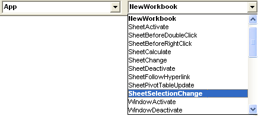

Tips_Macro_How_Catch_Events.xls (60,5 KiB, 3 111 скачиваний)
Tips_Macro_How_Catch_Events.xls (60,5 KiB, 3 111 скачиваний)Как отследить событие(например выделение ячеек) в любой книге?
Иногда при разработке надстройки просто необходимо отследить какое-либо событие в книге. Но модуль ЭтаКнига и модули листов надстройки позволяют отследить лишь те события, которые происходят в той книге, в которой этот код прописан. А как же другие книги? Как, например, отследить событие открытия любой книги в Excel и сделать какое-то действие в зависимости от имени открытой книги? Или как отследить выделение ячейки в любой книге? Изменение значений ячеек?
Если не знаете что такое надстройка - Как создать свою надстройку?
На самом деле все до смешного просто:
В модуле ЭтаКнига главной книги(надстройка либо PERSONAL.XLS) необходимо создать переменную, которая будет ссылкой на все приложение Excel
Private WithEvents App As Application
|
1 |
На событие открытия главной книги(той, в которой пишется код и в которой объявили переменную App) присваиваем ей значение запущенного приложения Excel:
Private Sub Workbook_Open() Set App = Application End Sub
|
1 2 3 |
Это позволит нам получить доступ к событиям приложения и отследить их.
Создаем событие - аналогично выбору других событий в книге - в левом окне выбора объектов выбираем App. В правом появятся все доступные события для нашего объекта App:

в этом книге перечислены все события, которые могут быть "перехвачены" в любой открытой книге, а не только той, в которой этот код записан. Сразу после выбора какого-либо события из списка автоматически будет создана пустая процедура, в которую надо будет лишь добавить необходимый код.
Рассмотрим некоторые из этих событий.
Вот так, например, будет выглядеть код отслеживания открытия любой книги:
Private Sub App_WorkbookOpen(ByVal Wb As Workbook) MsgBox "Вы открыли книгу:" & Wb.Name End Sub
|
1 2 3 |
Private Sub App_WorkbookOpen(ByVal Wb As Workbook) |
Теперь при открытии любой книги будет появляться сообщение с именем именно открытой книги.
Wb - это переменная событийной процедуры. Для каждой процедуры они могут отличаться или вовсе отсутствовать. Но если они есть - значит можно их использовать. Например, в этой процедуре(App_WorkbookOpen) Wb это открываемая книга. И к ней можно обращаться как к любой книге: перебрать листы, изменить какие-то свойства и т.п. Например, в коде выше я просто вывожу в информационное окно с именем открываемой книги.
Сам по себе код не заработает. Т.к. назначение значения переменной App происходит только при открытии самой книги(надстройки или PERSONAL), то после создания кодов надо будет сохранить эту книгу и открыть заново
А с помощью этого кода можно отследить создание новой книги:
Private Sub App_NewWorkbook(ByVal Wb As Workbook) MsgBox "Вы создали новую книгу" End Sub
|
1 2 3 |
Private Sub App_NewWorkbook(ByVal Wb As Workbook) |
Отслеживаем выделение ячеек во всех открытых книгах:
Private Sub App_SheetSelectionChange(ByVal Sh As Object, ByVal Target As Range) MsgBox "Вы выделили ячейку с адресом: " & Target.Address End Sub
|
1 2 3 |
Private Sub App_SheetSelectionChange(ByVal Sh As Object, ByVal Target As Range) |
Target - это объект Range(ячейка или диапазон ячеек), которые были выделены в книге.
Sh - это объект Worksheet, ячейки которого были выделены.
Таким образом у нас есть две переменные, которые мы можем использовать. Например, можно производить определенные действия только на листах с конкретным именем:
Private Sub App_SheetSelectionChange(ByVal Sh As Object, ByVal Target As Range) If Sh.Name = "Отчет" Then MsgBox "Вы выделили ячейку с адресом: " & Target.Address End If End Sub
|
1 2 3 4 5 |
Private Sub App_SheetSelectionChange(ByVal Sh As Object, ByVal Target As Range) |
А процедура ниже поможет отследить изменение значений ячеек во всех открытых книгах и отменить нежелательные изменения:
Private Sub App_SheetChange(ByVal Sh As Object, ByVal Target As Range) Dim bUndo As Boolean If Sh.Name <> "Для изменений" Then If Sh.Name = "Описание" Then 'для этого листа можно изменять только ячейки диапазона "A16:B20" If Intersect(Target, Sh.Range("A16:B20")) Is Nothing Then MsgBox "На этом листе изменять можно только ячейки в диапазоне 'A16:B20'!", vbCritical, "www.excel-vba.ru" bUndo = True End If Else 'для всех других листов, кроме листа "Для изменений" - изменять значения ячеек вообще нельзя MsgBox "Ячейки на этом листе нельзя изменять!", vbCritical, "www.excel-vba.ru" bUndo = True End If If bUndo Then With Application .EnableEvents = False .Undo .EnableEvents = True End With End If End If End Sub
В приложенном к статье файле будет чуть более понятно что делает эта процедура.
Естественно, в таких процедурах можно назначить выполнение и других(нужных) действий. Например, вызов макроса (Call ИмяМакроса). Макрос в таком случае должен быть размещен в стандартном модуле и иметь статус Public(или вовсе без статуса). Сам модуль должен тоже находится в той же книге.
Скачать пример
Tips_Macro_How_Catch_Events.xls (60,5 KiB, 3 111 скачиваний)